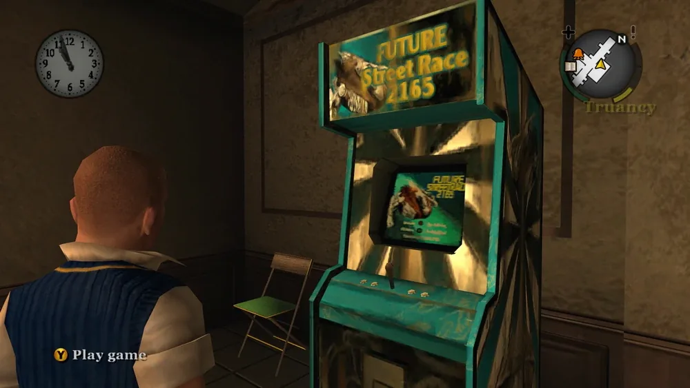
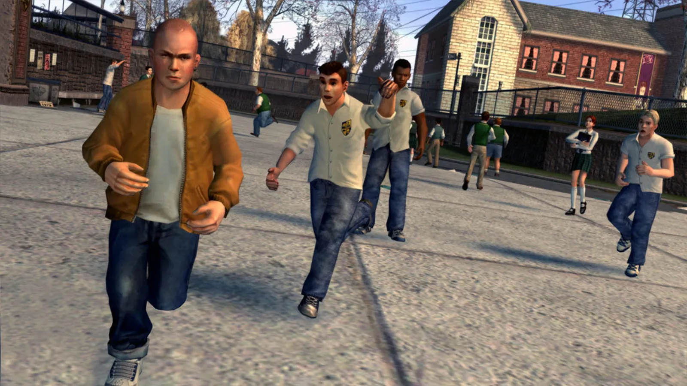

01What I owned
On Bully I worked on scripting mini-games and NPC navigation before moving on to bosses and combat.
- Core member of the four-person team that created and designed the combat system
- Responsible for boss designs and ensured their implementation
- Scripted mini-games and ambient NPC interaction systems
- Created the Future Street Race 2165 mini-game
- Scripted NPC navigation
- Designed the social reputation system
02Mini-games and NPCs
I scripted mini-games, NPC navigation and ambient NPC interaction systems. Future Street Race 2165 was one of the mini-games I created.

03The combat system
At Rockstar, I was part of the small team that created the combat system for Bully, designing enemy behaviors, building boss encounters, tuning difficulty, and iterating until fights landed emotionally and mechanically.

Multiple enemies could surround you but they could only attack you based on a token system we created inspired by classic kung fu movies where only one enemy would attack you at a time.
Token system
- Enemy
- Enemy
- Enemy
Inspired by classic kung fu movies.

Originally we used all the face buttons for combat but we were given the challenge of retaining the depth of combat while simplifying it to one button.
We successfully created a combat system which elements could be seen in later titles such as Sleeping Dogs and Arkham Asylum.
04What I learned
My AAA grounding comes from Rockstar Games and, after it, Slant Six. That is where I learned what complex pipelines, large teams, and a high production bar actually feel like in practice.